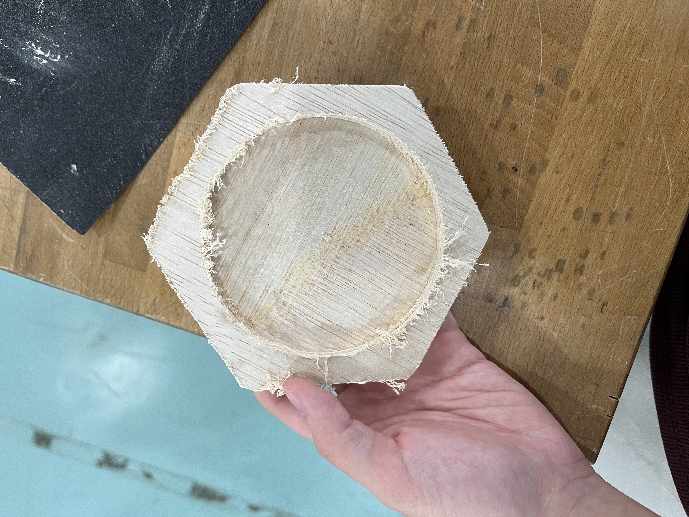
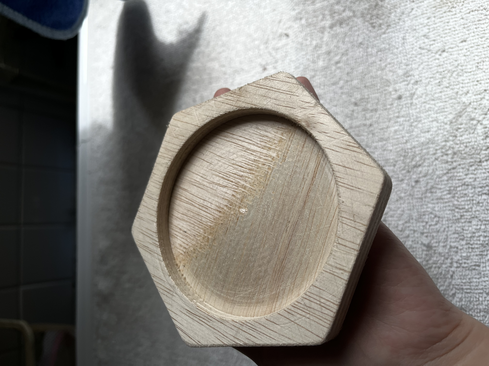
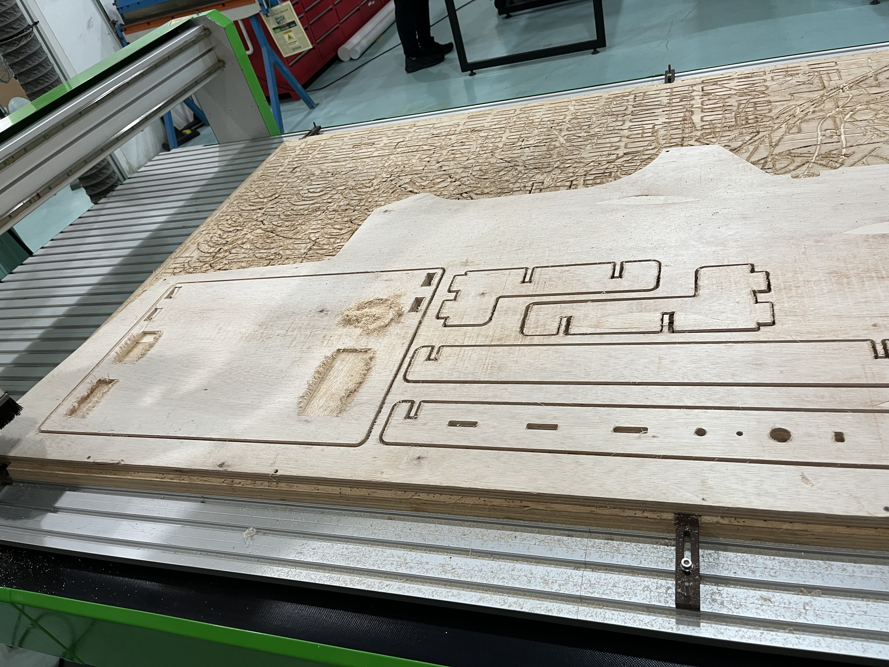
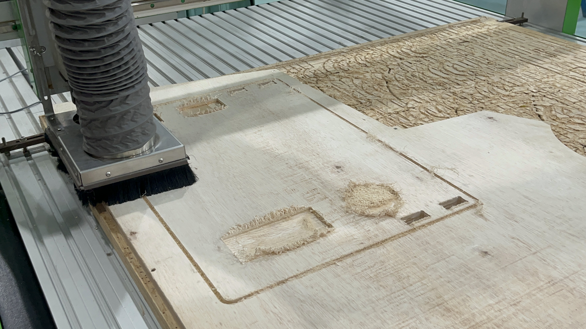
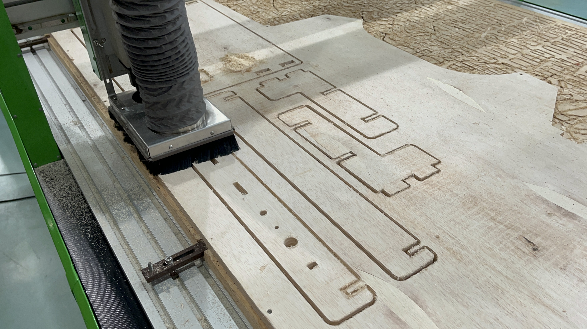
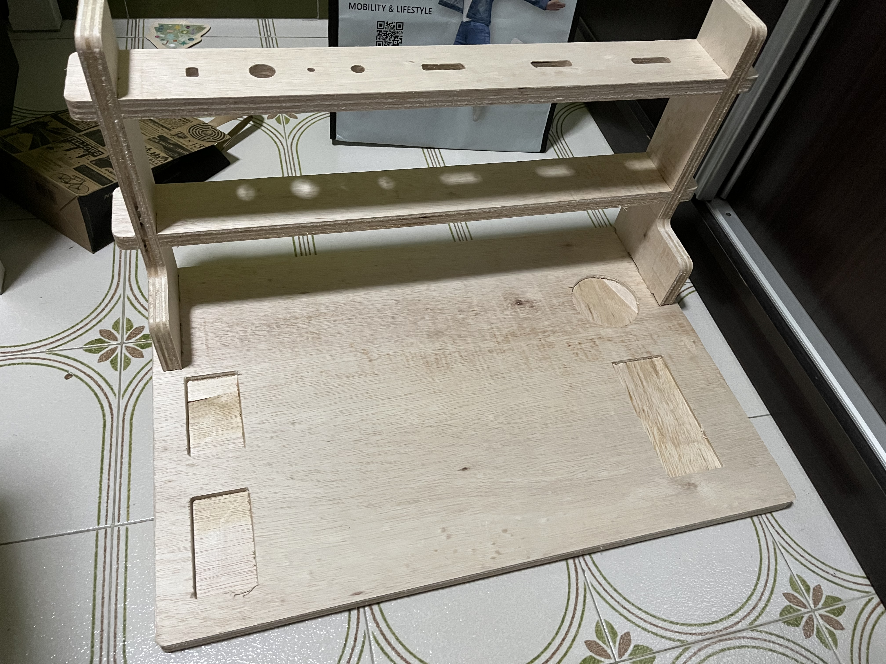
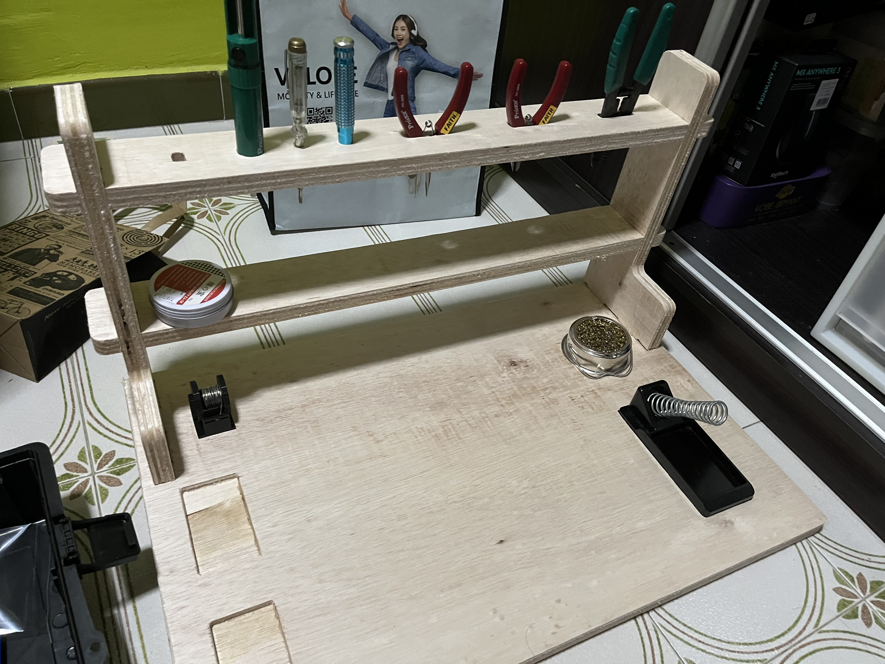

How to make my soldering desk in Fusion360
- Firstly, I set the user parameters which I will then use for later which will help when I need to make adjustments to the measurement if ever I do need to adjust
- I created a new sketch and set the limits for how big of a space we are given for the plywood
- I created another new sketch and started sketching out the soldering base
- Once done, I extruded the soldering base to the thickness but not extruding the 2 holes as that will be what the stands will slot into
- I then created a new sketch to make the stand starting with the left stand
- I then extruded the stand sketch starting from one of the side inner holes to start the extrude from there
- Then using combine tool, to make the slot holes on the stand
- Now we need to make the slots for the shelfs, so making a new sketch on the stand body we just made earlier I started sketching out the slots
- Using the extrude tool we can cut away the slots
- Using the extrude tool again, we extrude the profile of the first stand to create another stand for the other side
- We can now use the combine tool to make the holes on the other side of the soldering base so that the stand can slot in
- Making a new sketch on one of the stands, we can now sketch the shelfs
- Using the extrude tool, extrude the breadth of the shelf
- We can now make similar slots on the shelfs using the combine tool starting with one side of the shelf and doing the same with all the other sides using the combine tool
- Create a new sketch on top of the soldering base and sketch out the holes for the soldering iron and circle and the holes for containers
- Using the extrude tool, we cut out the holes for the container and then for the soldering iron and circle
- Creating a new sktech on the tool shelf, sketcching the holes for the tools
- Then cut the tool holes using extrude tool
- Using the fillet tool fillet some corners of my design
- Lastly for each of the different body parts made create a new sketch and save as dxf which will be used later in the cnc software to cut out my design. You should end up with 5 different dxf files
- Here is what my soldering desk will look like:


Preparing the files to CNC using VCarve Pro
- First you can download the free trial version of the VCarve Pro from this link
- After downloading the software, create a new file
- For Job Dimensions, put in the width, height and thickness of ur material that u will be using for me im going to use a 1200mm x 1200m with thickness of 15mm
- U can put guidelines on where u want to put the dxf files and so that u dont cut too close to the sides of the plywood and have gaps in between. Drag from the measuring lines to leave a gap about 20mm
- Then using the import button import ur images one by one and drag it into the while space
- Once you have imported all ur dxf files and arranged them making sure they have gaps inbetween, to make sure there are no open vectors, select all the dxf sketches and click the join vector button, it should be all closed
- Now we have to make dog bones for the slots so that we will be able to slide it together, so click on the fillet icon and click dogbone and set the radius to 3mm as we will be using a 6mm diameter flat head endmill
- We can now start making the pocket holes first so ill click the 2 hole vectors on the right side of the soldering desk and click the exit icon to bring me to the toolpaths and click on pockets
- For these pockets the cut depth will be 4mm and we will select a tool to use which is the 6mm endmil flat head. Using these settings shown below then click calculate
- Next u can select the left side 2 holes of the soldering desk and create pockets with cut depth of 7mm then click calculate
- Lastly we need to make profile cuts so i select the remaining sketches that i want to do a profile cut and create the tabs around the different sketches so that when it is done cutting the pieces wont fly out then adjust the other settings and click calculate
- You can do a simulation of your toolpaths by clicking the preview toolpaths to see how it will all be cut out
- You can also see the estimate time that it will take to do all the toolpaths by clicking the Toolpaths summary
- Once you are done with checking the toolpaths and everything we can then save the file by clicking the save toolpaths and selecting all the toolpaths need to be saved. As this is a free version i wont be able to save the file to be used for the CNC machine but i managed to do it when using the CNC machine in school but the settings are supposed to be for the machine it should be Versatil 2500 which is the school's CNC machine. and the Post Processor should be G-code(mm) (*.tap) then click save


Practical Test
We had to take a practical test to certify ourselves to be able to use the machine and to know how to use the CNC machine safely and what are the things we need to look out for when operating the CNC machine to be sure we won't injure ourselves.
We each got to make our own coasters for the Practical Test.
When the cnc finished cutting out the coaster shape and now it needs sanding
After sanding
Process of using the CNC Machine
These are the different CNC cutting tools. For my soldering desk, I used a 6mm flat head.




This is the final product of my soldering desk.

